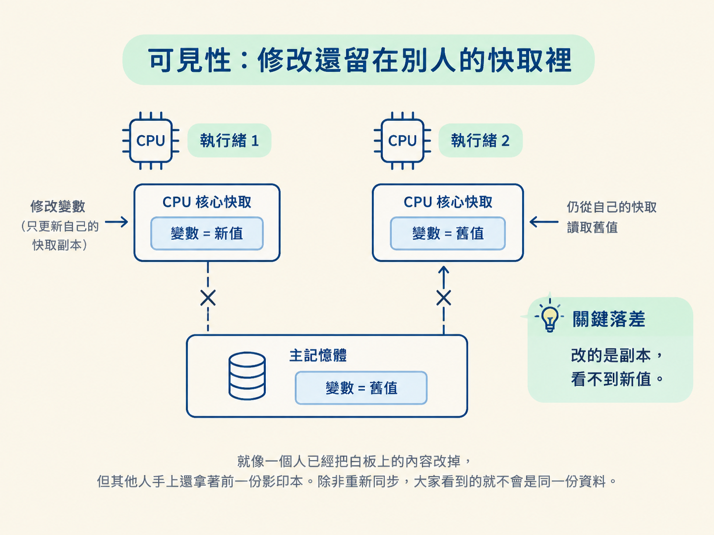
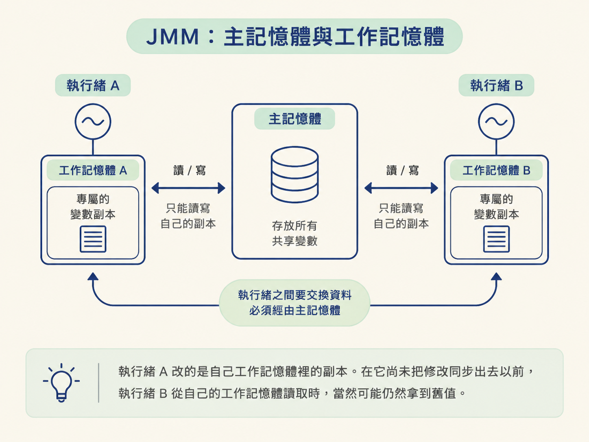
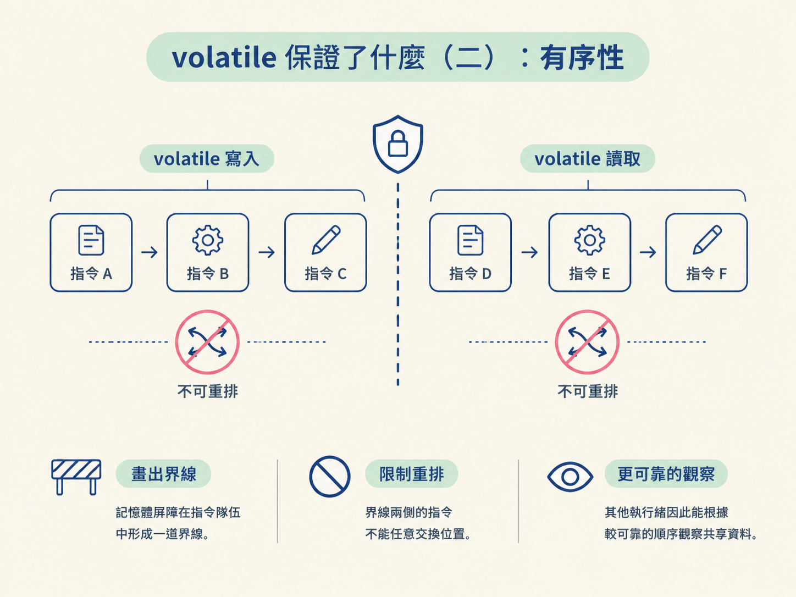
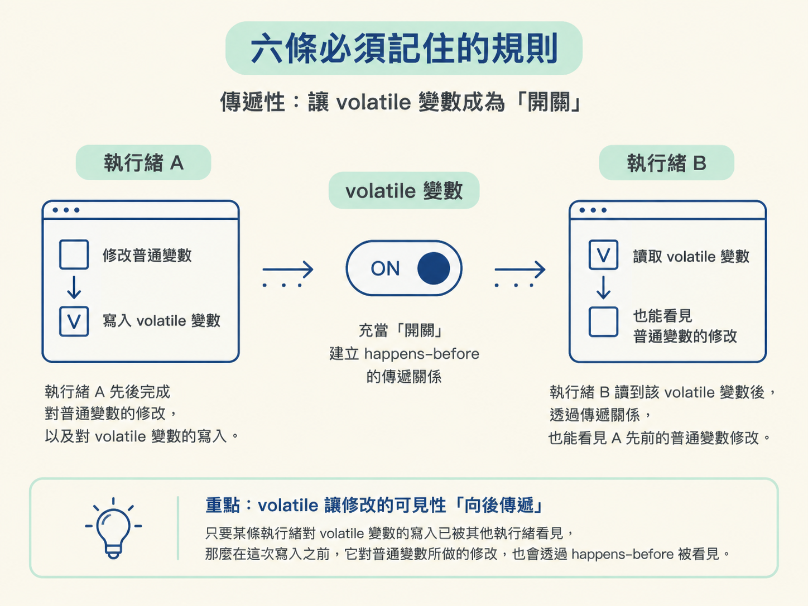

這一節會把 Java 併發裡的三個核心問題——原子性、可見性與有序性——串起來，理解 JMM 的主記憶體與工作記憶體模型。
你也會知道 volatile 為什麼能保證可見性與有序性，卻不能保證原子性；最後再用 happens-before 的六條規則，判斷兩個操作之間是否存在可見性關係。
上一節談的是互斥：同一時間只讓一條執行緒進入臨界區，避免大家同時修改同一份資料。
但多執行緒程式還有另一類麻煩，和「有沒有搶同一把鎖」無關。一條執行緒把某個開關改成 true，另一條執行緒卻一直讀不到，迴圈像卡在原地，彷彿那次修改根本沒有發生。
這時候問題不是「誰能進去」，而是「誰看得到」。JMM（Java Memory Model，Java 記憶體模型）與 volatile 處理的正是這件事。搞懂它們，你才知道哪些變數需要加 volatile，也才能看懂下一節經典的 DCL 陷阱。
Java 併發裡許多難題，都可以先從三個角度檢查：操作是否完整、修改是否看得見、執行順序是否符合預期。先看它們各自出問題時的樣子。
原子性指的是：一個操作或一組操作，要嘛全部完成，要嘛完全不做，中間不能被切開。
看起來很簡單的 i++，底層其實包含三個步驟：讀取 i、計算 i + 1，以及把結果寫回去。
假設 i 原本是 5。執行緒 A 讀到 5，還沒寫回去，CPU 就切換到執行緒 B。B 也讀到 5，算出 6 並寫回；接著 A 回來，手上的舊值仍然是 5，於是也把 6 寫回。
兩條執行緒明明各加了一次，結果卻只增加 1。問題就在於這組「讀、算、寫」的複合操作被執行緒切換拆開了。
可見性指的是：一條執行緒修改共享變數後，其他執行緒能不能及時讀到新值。
為了提升速度，每個 CPU 核心都有自己的快取。執行緒修改變數時，這個新值可能先留在目前核心的快取裡，尚未同步回主記憶體。此時另一條執行緒去讀，仍可能讀到主記憶體裡的舊值。
就像一個人已經把白板上的內容改掉，但其他人手上還拿著前一份影印本。除非重新同步，大家看到的就不會是同一份資料。

有序性指的是：程式的執行順序是否符合我們根據原始碼所做的推論。
為了最佳化，編譯器和 CPU 可能在不改變單執行緒結果的前提下，重新排列指令。單執行緒通常看不出差異，但多執行緒同時觀察資料時，就可能出現問題。
例如雙重檢查鎖的單例模式，可能發生物件尚未初始化完成，引用卻已經先被其他執行緒看見的情況。這就是有序性被破壞後的典型問題。
| 特性 | 出問題的原因 | 常見解法 |
|---|---|---|
| 原子性 | 執行緒切換打斷複合操作 | synchronized、Lock、Atomic 類 |
| 可見性 | 修改留在 CPU 快取，尚未同步回主記憶體 | volatile、synchronized、Lock |
| 有序性 | 編譯器與 CPU 重新排列指令 | volatile 的記憶體屏障、鎖 |
上面三種問題，Java 透過 JMM 這套抽象模型來規範。JMM 不是一塊真實存在的硬體，而是一組用來描述「執行緒應該如何和記憶體互動」的規則。
JMM 的核心設定是：所有共享變數都放在主記憶體中；每條執行緒則擁有自己的工作記憶體，裡面存放它即將使用的共享變數副本。
工作記憶體可以理解成 CPU 快取的抽象表示，但它不是在說 Java 直接操作某一層硬體快取。對執行緒來說，讀取與賦值都發生在自己的工作記憶體裡，執行緒之間若要交換資料，就必須透過主記憶體。
把這個模型記住，可見性問題就容易理解了：執行緒 A 改的是自己工作記憶體裡的副本。在它尚未把修改同步出去以前，執行緒 B 從自己的工作記憶體讀取時，當然可能仍然拿到舊值。

volatile 的作用，就是替這個共享變數建立更嚴格的讀寫規則，讓「寫入後能被其他執行緒看見」不再只是運氣。
volatile 是 Java 裡相對輕量的同步機制。它最主要的作用是保證可見性，寫入與讀取兩邊都受到約束：
可以把 volatile 想成一個會廣播的公告欄：有人更新內容時，新的版本會被發布出去；其他人手上的舊影本也會被標記為失效，不能繼續拿來當作最新資料。
volatile 的第二個作用是保證有序性。它透過插入記憶體屏障，限制特定類型的指令重排序。
在 volatile 寫操作的前後，會插入相應的屏障，避免這個寫入被任意移到屏障另一側；在 volatile 讀操作之後，也會插入屏障，避免後續的讀取被重排到 volatile 讀取之前。
記憶體屏障就像在指令隊伍中畫出一道界線。界線兩側的指令不能任意交換位置，其他執行緒因此能根據較可靠的順序觀察共享資料。

這是面試中很常見的陷阱：volatile 不保證原子性。
它只能保證你讀到的值具有可見性，卻不能把一整組複合操作變成不可分割的一步。i++ 仍然包含讀取、計算與寫回三個步驟。
即使 i 是 volatile，volatile 也只能確保每次讀取時拿到較新的值，無法保證從「讀完」到「寫回」之間不會被其他執行緒切走。因此，用 volatile 修正共享計數器，數字仍然可能遺失。
如果需要保證原子性，就要使用 synchronized、Lock 或 Atomic 類，讓整組操作具備不可分割的保護。
底層既可能重排序，又存在不同層級的快取，那程式設計師究竟該依賴什麼？JMM 提供的答案是一份規則上的承諾，叫做 happens-before。
「A happens-before B」並不是說 A 在物理時間上一定比 B 早執行，而是表示兩件事：
只要最終結果符合這個規則，JMM 仍可能允許底層對部分指令重新排序。因此，happens-before 管的是「結果是否可見、順序是否成立」，不是單純比較兩個操作在時鐘上的先後。
它的實際用途，是協助我們判斷資料是否存在競爭，以及一段多執行緒程式是否安全。如果兩個操作同時存取同一份資料，彼此之間又沒有 happens-before 關係，就可能發生問題。
start() 之前的所有操作，happens-before 新執行緒中的所有操作。join() 返回之後的操作。其中最值得注意的是傳遞性。它讓 volatile 變數可以充當一個「開關」：只要某條執行緒對 volatile 變數的寫入已經被其他執行緒看見，那麼在這次寫入之前，它對普通變數所做的修改，也能透過 happens-before 的傳遞關係被看見。

這個特性正是下一節 DCL 能夠成立的關鍵。
併發裡的三個根本問題是原子性、可見性與有序性，分別常見於執行緒切換、資料快取與指令重排序。JMM 用主記憶體與工作記憶體的抽象模型，解釋了為什麼一條執行緒做出的修改，另一條執行緒可能看不到：每條執行緒操作的可能是自己工作記憶體中的副本，執行緒之間必須透過主記憶體交換資料。volatile 能透過寫入同步、讀取重新取得最新值來保證可見性，也能透過記憶體屏障限制指令重排序，卻不能讓 i++ 這類複合操作具備原子性。happens-before 是 JMM 對可見性與邏輯順序的承諾，重點是結果可見，而不是物理時間上的絕對先後；六條規則中，傳遞性尤其關鍵。
到這裡，抽象觀念已經就位。下一節會用一個具體案例來驗收：為什麼單例模式的雙重檢查鎖，少加一個 volatile 就可能出問題？答案就藏在這一節談到的「有序性」，以及 new 建立物件時可能被重新排列的步驟裡。